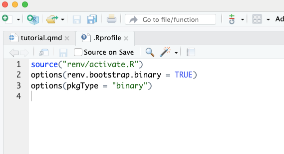

Towards a more reproducible scientific workflow in R and R Studio using Quarto: A tutorial
Background and aims
Why bother creating a reproducible workflow?
A fundamental aspect of scientific research is that it should be open to others and reproducible. However, not many people achieve that goal on a routine basis (at least not in the disciplines that I’m most familiar with, which include psychology and human neuroscience).
For the benefit of science, adopting research practices that aid transparency and computational reproducibility helps to create a research culture where independent verification and collaboration are the norm, rather than the exception.
From a more selfish perspective, developing a reproducible and consistent workflow is important for your future self. That is, you (and your lab members) benefit if things are easy to reproduce in 6 days, 6 weeks or 6 months time.
What’s the difference between replicable and reproducible?
Replicable: You can run a new study following a previously published set of materials and find similar patterns of results (as measured by some comparable metric).
Reproducible: You can take previously published data and analysis code and reproduce the identical pattern of results.
What is the aim of this tutorial?
Outline a workflow in R and R Studio that goes from raw data to a finished manuscript in a (hopefully) computationally reproducible manner.
What kind of workflow is presented?
The basic component pieces are as follows:
- renv() to manage R package versions
- git for version control
- GitHub for collaborating and sharing coding
- The Tidyverse ecosystem for data wrangling and visualisation
- brms for building Bayesian regression models
- The quarto-preprint extension for writing reproducible manuscripts in Quarto.
As you can see, all I am doing here is combining a bunch of packages and processes into one workflow. There is nothing inherently novel in the workflow I present, just one worked example of how to combine a set of processes.
Intended audience
If you analyse data in R and also produce manuscripts and reports, this might be helpful.
Disclaimer
I’m not a computer scientist. I’m a cognitive neuroscientist and a relatively inexperienced programmer. This means I will be presenting only a basic introduction that is based on my experience running a lab. I am sure that there are better ways to write code and setup a project’s workflow. Moreover, given the focus on reproducibility over the last decade or so, there are probably more comprehensive workflows available online.
However, concrete examples of how you combine renv(), git, GitHub and the quarto-preprint extension into one workflow seem relatively rare. And that’s the kind of workflow that I’m encouraging my lab to use, so I figured I should write it down somewhere. With this disclaimer and the spirit of continual improvement in mind, it is worth stressing that this is a live document that will be updated in time, and therefore constructive feedback is welcomed.
Structure of the tutorial
There are four main sections.
1) Project setup.
Concepts and packages that underpin the general setup are described.
2) Project organisation.
Two general ways to organise scientific projects are presented.
3) My lab’s workflow.
My lab’s scientific workflow is presented to provide a concrete example of the workflow in practice.
4) Project setup practical examples.
Practical examples of how to set things up are given with screenshots to illustrate.
Project setup
For each project, there is more general setup required than you might be used to. This takes time, but it is really valuable. The general setup process is the foundation that makes your work become computationally reproducible in an efficient and effective manner. This general setup is also what you want to get baked into a good data hygiene habit as soon as possible. Once it becomes routine to work this way, it is no longer mentally taxing because it has become habitual.
There are several aspects to the general setup, which I outline next.
Always work within an R project (.Rproj)
Whenever you start a project, open an R Project file (.Rproj) first. I would do this no matter how trivial the project. Unless you are truly just messing around (whatever that means), I would ALWAYS just start by opening an R project first.
For those that like to open an R script and get coding, this will feel like a pain because it IS a pain in the backside.
I admit that initially, it is simply annoying and slows you down. But very quickly, I found that it became a baked-in habit, which can be done efficiently once you start to feel familiar with the general setup process.
R package management via renv()
What problem is renv() solving?
renv() solves a major problem with the default approach to package management in R. The default is that packages are installed into the global R environment and loaded from the global R environment. Whenever you load a package, therefore, you load the same package versions because you only have one package version installed on your machine at any one time. For example, let’s say you are working on 20 distinct scientific projects, each of which may last for a different duration with some finishing and some new projects starting. Each project has a similar structure and uses a similar set of packages. The default is that they would load packages that are installed in the global R environment. Over time, as you update a particular package, then it will update the package version that is stored in your global R environment and subsequently ALL 20 SCIENTIFIC PROJECTS will now load the new package version.
This workflow can be problematic for several reasons.
- Over the typical duration of many scientific projects, which often last months or years, it is hard (or borderline impossible) to keep track of which package versions were involved in which specific project’s analyses.
- It can be very difficult to decide when to update packages, as it might interfere with older projects, which remain active.
- It is hard to easily share which specific versions you used in a particular analysis. You can use sessionInfo() to list what you used in the current script, but that is at best a partial solution.
- It is hard to go back in time and load packages that you used in a past analysis.
renv() basics
For the basics, watch the below video and head to the renv() website. They are both superb resources and clear for non-programmers.
Short video on youtube (20 mins), which provides an introduction to renv() .
Take a look at the renv() website for further details.
renv() in action
- When you open your R project file, always activate renv() to perform package management within your R project.
- Your packages are installed within the specific R project (i.e., the .Rproj file) and not in the global R environment.
- Your R package versions are recorded in a lock.file when you run the function renv::snapshot().
- And your future self or anyone else can directly install those specific package versions by running renv::restore().
- Alternatively, if you want to update packages, then update them in a normal manner and record them in your lock.file with renv::snapshot().
renv() benefits
- The packages that you load are always specific to the project that they are loaded within, which means that each project can use different packages and package versions.
- When you work on multiple projects over the course of months or years, there is no issue identifying which package version you used previously.
- If you update a package, it only updates the package version in that specific project.
- Sharing which packages you used with others becomes trivial as these are automatically recorded in a lock.file which can be automatically loaded and installed by other users.
renv() engineering
A further appealing aspect of renv() is that it relies on smart engineering (at least it does to my untrained eye).
- Rather than install packages repeatedly in every project, which can be time-consuming and hog space on your machine, renv() creates a cache that all R projects can draw from.
- If a specific package version has been previously downloaded into the cache, your R project will just link to the cache, rather than re-download the specific package version.
- That all sounds very sensible to me, but I’m not an engineer, so what do I know?
Version control via git
For those like me that use R Studio and would not consider themselves to be a particularly experienced programmer, then read this outstanding tutorial on using git with R Studio: Vuorre & Curley, 2018.
This tutorial walks you through the value of using version control via git, as well as how to do so when you primarily use R Studio.
One thing to note, git is a general piece of version control software that is not tied to R. It is therefore useful for keeping track of all types of files and their version histories.
git benefits
- You can stop using filenames to record version histories. That means you can stop using awful labels, such as dates, initials, or the dreaded ….: manuscript_initials_date_final_FINAL_REALLYFINAL_FFS.doc.
- Instead, git is designed to track changes, so you can completely stop renaming files.
- When you “commit” a change to git, it requires you to add a description of what the change involved.
- If necessary, you can then go back in time to access an earlier version of the project and there should be a description of the state of the project at that time.
git warning
Initially, git is going to seem very weird. There is no denying that. It takes a little bit of getting used to, but the benefits are immense in the end because you can transition to using a tool that was designed specifically for version control to do version control. And that makes sense in my mind in general, and especially compared to the alternatives (e.g., manually renaming files). As such, you benefit from someone else doing the hard work to build the relevant infrastructure that is purpose-built for efficiently and effectively tracking version histories.
Collaboration and code sharing via GitHub
The same tutorial by Vuorre & Curley (2018) also explains how to work together with collaborators and share your code publicly when you are ready to do so.
- This involves connecting the project on your local machine to an online repository that is stored on GitHub.
- When you “commit” a change, you can simply “push” the commit to GitHub.
- At that point, the online version is the same as the local version on your machine.
- This process is convenient, which makes the possibility of collaborating and sharing projects an easy option, since you do not do anything extra to the local folder and you don’t drag and drop files to a online repository, such as the OSF.
- If you want to co-author code with someone else, then you can give others access to the project and they can add changes and you can decide if and how you want to integrate those changes.
Prepare a manuscript in Quarto using the quarto-preprint extension
Quarto is just the latest version of R Markdown. And the quarto-preprint extension is just one way of writing reproducible manuscripts in Quarto.
Some of the benefits of using Quarto to write manuscripts are as follows:
- computer code and prose can be written in one document.
- you can output to a range of different file formats, such as .html, .doc or pdf.
- changes can be tracked via git just like another file.
Further details can be found in the following links.
quarto-preprint extension: https://github.com/mvuorre/quarto-preprint
Quarto: https://quarto.org/
In brief, my experience so far using the quarto-preprint extension is that it works without much fuss and it is very fast to produce pdfs via the use of typst.
Project organisation
So far, we’ve covered the main component pieces that we are using to create a reproducible environment in R, track changes via git, collaborate and share code via GitHub and write a manuscript in Quarto.
But how should we structure things to put all of those pieces together? We have some choices here, two of which I refer to as “monsters” and “modules”.
Monsters vs. modules
A “monster” structure would be one massive beast of a Quarto file that takes in the raw data, runs analyses and produces the manuscript via the quarto-preprint extension.
A “modular” structure would split up the workflow into separate self-contained units or modules.
I can see strengths and weaknesses for both types of structure, which I outline next.
Monster workflows
Monster workflows are self-contained in one .qmd file, which is appealing for linking data and model output to plots and tables, as they are all created in one single file. I’m sure there is some technical language from computer science that explains the benefits of this kind of workflow, in terms of computational efficiency and the minimisation of bugs and code breakdowns. But I as I said earlier, I’m not a computer scientist, so I’m just guessing. My sense would be that monster workflows are good when the analyses are relatively simple. For example, if data files are not overly large and only a few analyses are run, then it seems like it would be a perfectly sensible and preferable choice.
An example is here from Lisa DeBruine’s group: https://osf.io/eb9dq
Modular workflows
Modular workflows deconstruct the whole into distinct pieces. My lab tends to adopt this approach. This is mainly because the thought of having all of that code in one .qmd file makes my brain melt. It is also because some of the Bayesian models we build can take hours, days or weeks to run. I know you can use the “cache” function in code chunks to save re-doing costly computations. But at the moment, I just prefer to split up the main tasks into separate modules and scripts. As such, this is the workflow that I outline below to provide a concrete example of my lab’s current approach.
My lab’s workflow
Irrespective of the way the project is organised (i.e., monster vs modular), my lab tries to adopt a consistent data science workflow or structure. The specific choices we make here are not important for creating a reproducible workflow. In other words, whatever analysis pipeline you use within R, you could always pair that with renv(), git, GitHub and quarto-preprint. But by providing a real example of a typical dataset and analysis pipeline (rather than using simple example datasets), it might help folks understand our choices a little more. It will also help my lab members (or anyone else) to get their hands dirty with one of our typical data analysis pipelines. So, as you read what follows, if you’re interested in digging into the analysis weeds, you can head to the /exp1/ folder and take a look at the specific analysis scripts themselves.
If a given project followed the general setup, which I outlined above, it would mean that the project folder would already contain the following:
- An .Rproj file (called something sensible, which labels the project).
- A renv.lock file.
- A /renv/ folder
- A README.md file. README files are very important. I would make one for EVERY SINGLE project that you ever do. I cannot stress how important README files are for your future self when you want to return to a project. See some advice here on how to write one.
In addition to these folders, we would then have the following folders:
- experiment folders (one per experiment, labelled /exp1/, /exp2/, etc.)
- a manuscript folder, labelled /manuscript/.
The manuscript folder then draws upon the contents of the experiment folders whenever necessary to produce the final manuscript.
I will describe the contents of the experiment folders, followed by the contents of the manuscript folder.
Experiment folders
I made three experiment folders just to provide the feel of things for multi-experiment papers, which would be the norm in my lab (i.e., exp1, exp2, exp3). But, for now, only exp1 has any content in it.
In each /exp/ folder, we would typically include a series of .Rmd files and further sub-folders. These files and folders are as follows:
Files
wrangle.qmd
This file takes the raw data, wrangles it to produce plots and descriptive statistics and also re-shapes it (if necessary) to be ready for subsequent statistical modelling.
models.qmd
This file takes the processed data and builds some Bayesian multi-level regression models.
effects.qmd
This file takes a model object and then visualises and tabulates parameter estimates from the posterior distribution.
Sub-folders
Various subfolders and their contents are as follows.
/data/
Raw data as well as the processed data.
/models/
Saved model objects, which in our case were created using brms.
/figures/
Plots of raw data or model output.
/tables/
Tabulated data summarising data or model output.
/prereg/
The preregistration document, if it exists.
A manuscript folder
I now turn to describe the manuscript folder. This is located at the top level of the project, e.g.,:
/manuscript/
Inside the manuscript folder, we would have a series of files, such as:
manuscript.qmd
This is where R Markdown and the papaja package are used to produce the manuscript.
manuscript.pdf
This is the pdf document that is produced.
references.bib
A biblatex file for storing all other cited references.
/supplementary/
Inside the manuscript folder, there is a subfolder called “supplementary”, which contains a supplementary.qmd file. This can be used to produce a supplementary materials documents.
setting up the quarto-preprint extension
To get started, make sure you have an up-to-date version of quarto installed. Direct donwload here: https://quarto.org/docs/download/
Then, in the terminal, add the following quarto extensions to an existing project.
quarto-preprint
quarto add mvuorre/quarto-preprintword count
quarto add andrewheiss/quarto-wordcountother possibly relevant functions
quarto add andrewheiss/quarto-wordcountThen I would create and edit the details of the _quarto.yml file in the root folder, so that they are relevant for your project.
In addition, I would recommend:
- using zotero as a citation manager. It is free and there are lots of nice extensions that make it even better.
- adding the better bibtex extension to zotero.
- placing a reference style, such as apa.csl, in the manuscript subfolder.
Known limitations - Figure and table numbering in supplementary materials needs fixing.
Summary and conclusions
There is a clear need for scientific research to be more computationally reproducible. This is important when sharing your research with others that are external to your research group (e.g., journals, academics, grant bodies, industry, etc.). Understanding and reproducing past work in an efficient and effective manner is equally as important for your future self, as well as collaborators inside and outside of the lab.
But there is no such thing as a free lunch in this context. The steps that I have outlined above take a little bit of getting used to and there needs to be a healthy dose of expectation management in the process of ascending the learning curve. It will be a pain in the beginning as there are lots of new things to get your head around. But, in my experience, it gets easier relatively quickly and it is not long before you can see the obvious benefits.
In the following sections, I review a few key aspects of the proposed workflow and evaluate them against the alternatives.
package management with renv() and version control with git
My sense is that there is a lot to learn at the start, which puts people off. But, if we only consider data analysis and not writing manuscripts, this feels like a no-brainer to me. In other words, for the purposes of data analysis, I would definitely incorporate renv() and git (as well as github) into your workflow. The benefits hugely outweigh the initial learning curve costs.
Is writing in R markdown actually any better than writing in MS Word?
I don’t have that much experience writing manuscripts in R Markdown or Quarto, so it is still new to me at this point. My initial impression from writing a few manuscripts in this way along with reading a bunch of blog posts is as follows:
- You probably save no time overall compared to writing manuscripts in MS word, but you have a very different product.
- The product is more computationally reproducible and making changes is more robust and resistant to manual error. For example, you would no longer need to copy and paste information across tables or manually insert figures when updating an analysis in a revised manuscript.
- There is a learning curve that needs to be managed.
- If you use R more generally, it is easier for things to fit into an ecosystem and easier to make progress, given that you have a higher baseline level of experience.
- If you start to make the transition, follow principles of behaviour change and do not try to adopt everything at once. Instead, gradually build the component processes into your workflow. Once a component feels comfortable incorporate the next piece into your workflow. The gradual build might be as follows:
- Use renv() and git immediately.
- then connect to GitHub and share code/collaborate.
- then start using quarto-preprint to write manuscripts.
And what about collaboration when writing in R Markdown?
Quarto can generate a word doc, amongst a range of other documents (pdf, .html etc.). So that’s good. But, if your collaborators only use MS Word and record edits via “track changes”, then you might have to re-do edits in Quarto. That is a clear negative of the current workflow.
After decades of using word, however, I was ready for a change and felt it was time to encourage my lab to change also. So, the benefits outweighed the costs in my view. I opted to incorporate more edits into Quarto manually and version control those changes, in order to benefit from the much more substanial gains in computational reproducibility that Quarto offers. But I readily accept that that might not be the same calculation for everyone or for every project. In some cases, it might just be easier to use MS Word for manuscript preparation (or some other package) that is more familiar to the vast majority of the research team.
Project setup practical examples
Here are a bunch of screenshots that might help you initially setup an R project using renv() and git from R Studio.
Example 1 - creating your own R project with git and renv()
In R Studio, click File > New project.
Then you should see the following.
Select “New Directory”
And give the directory a sensible name. I chose “demo” for this example. Also tick the renv and git boxes and tick “Open in a new session” in the bottom left corner. Then hit “Create Project”.
This should open a R Studio project, which looks like the following series of images.
renv is automatically initiated.
And in the files section, there are a bunch of files and a renv folder.
And there is a git tab in the environment section.
In the files tab, if you click on the .gitignore file, it should open a file like this. Here you can add things that you do not want git to track, which can be helpful.
Then if you click the .Rprofile file, you should see this.
The below specifies that packages should be installed from binaries rather than source.

That should be about it for the setup.
As a sidenote, you will probably also want to set a global gitignore file for things that can be always ignore across all projects (see here).
Example 2 - cloning or downloading a project from github that uses renv()
You could also clone or download an existing project that used renv(). Here’s what you might do.
Got to github (or somewhere) and clone or download the project. Here is a past project of mine called “sim_demo”.
Click on the green button called “code” and then choose to clone the project (see earlier git tutorial for info. on cloning) or hit download ZIP.
once cloned or downloaded, open the R proj file and you should see something like the below image. The red text tells you that renv() has been automatically bootstrapped and installed.
you can type renv::restore() to install packages that are contained in the project’s lock.file. Press “y” to proceed to install all packages and see the download in progress like this. This could take a few minutes, depending on the number of packages.
When they are all done, the prompt returns.
Then you can open up a script, load a package in the usual way and the package version that was just installed from the lock.file will be loaded.